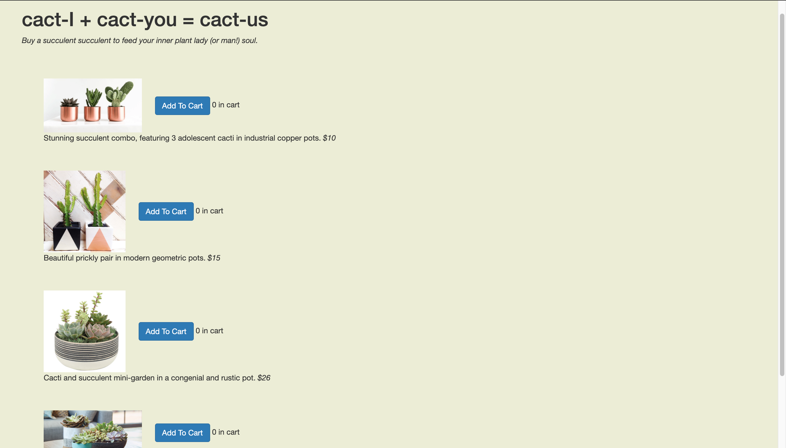
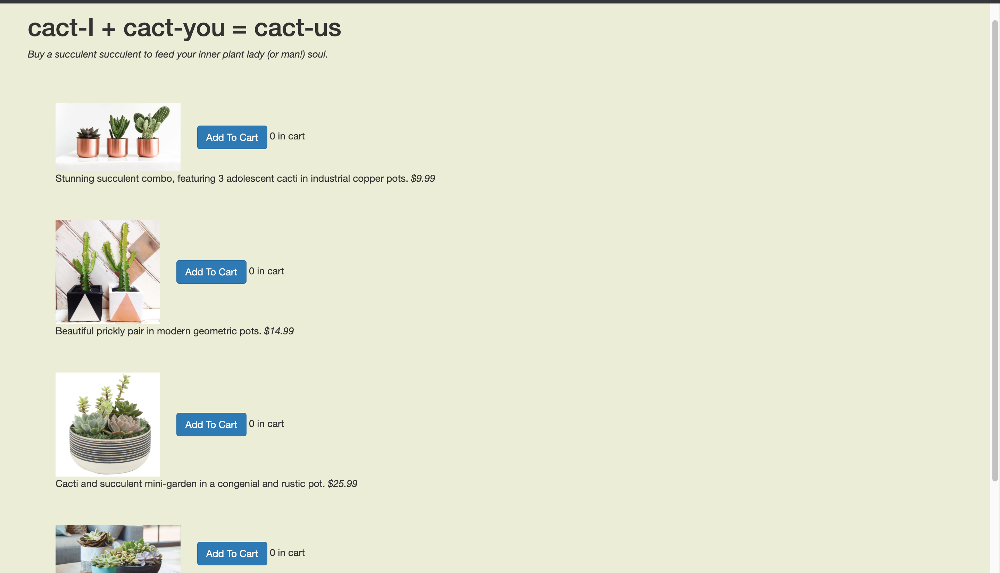

Making Changes
The main difference between versions A and B is the pricing. Popular opinion has it that having a price end in ".99" gives the illusion that an item is cheaper so more people are likely to buy it. To test whether this fact is true, I made the pricing of one website whole numbers (ie. $10) and the pricing of another one cent less than it's counterpart (ie. $9.99)
Whole Number Price Point

Decimal Price Point

Making Hypotheses
I made two hypotheses; one for each criteria: Time to Completion and Return Rate.
Time to Completion: the time it takes to complete the desired task (in this case, order cacti)
Return Rate: the number of times a user returned to the page
Time to Completion Hypothesis: Since the task was to put $150 worth of cacti into the cart,
I operated under the assumption that most users (aka our fellow classmates) would spam-click the
first button they saw. Setting the price of the first button to $10 means that the user would only
need to click the "Add to Cart" button 10 times. However, setting the price to $9.99 means that the
user would need to click the button 11 times. I hypothesize that this slight difference will result in
my "Whole Number Price Point" version to have a shorter Time to Completion
Return Rate Hypothesis: Since return rate usually manifests itself as the user viewing the
cart and then returning to the main shopping screen, my prediction for return rate is based on the users
that I think are more likley to view the cart. Since decimal price points make it harder to calculate whether
a user has hit their $150 quota, I hypothesize that Decimal Price Point version users are more likely
to check the cart to view their price and return back to the home screen, thus having a higher rate
of return
Data Collection
In order to collect data, I deployed my website to Heroku and allowed users to access my
website
in order to add plants to their cart. Heroku automatically deploys version A 50% of the time and version B 50%
of the
Results
Here I present my results in the form of an infographic I made through Figma!

Takeaways
- I think that my results would have been more compelling had I had a larger sample size. It's hard to
say whether my results are accurate or if a Type I or Type II error occurred because I have so little power
due to small sample size.
- Assuming that my results are valid, my experiments demonstrate that not all visible differences actually
ellicit
different behaviors in users.
Time to Completion: the time it takes to complete the desired task (in this case, order cacti)
Return Rate: the number of times a user returned to the page
In order to collect data, I deployed my website to Heroku and allowed users to access my website in order to add plants to their cart. Heroku automatically deploys version A 50% of the time and version B 50% of the
Here I present my results in the form of an infographic I made through Figma!